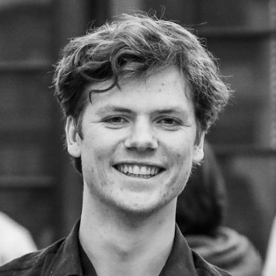
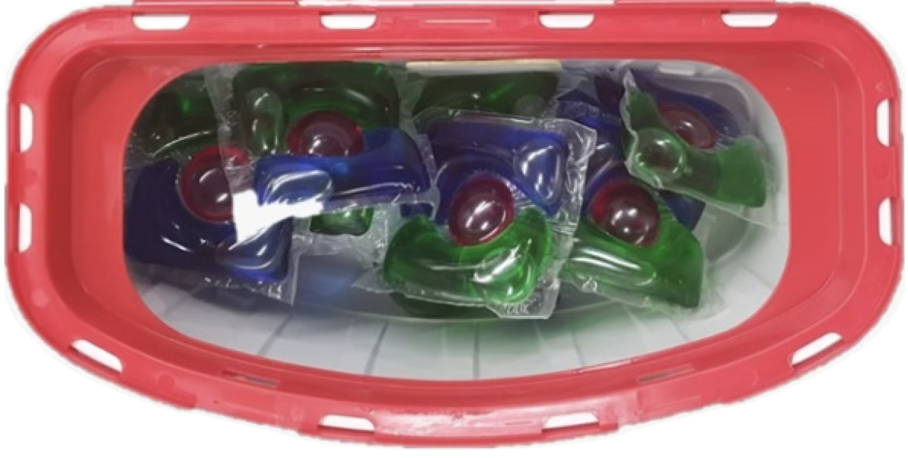
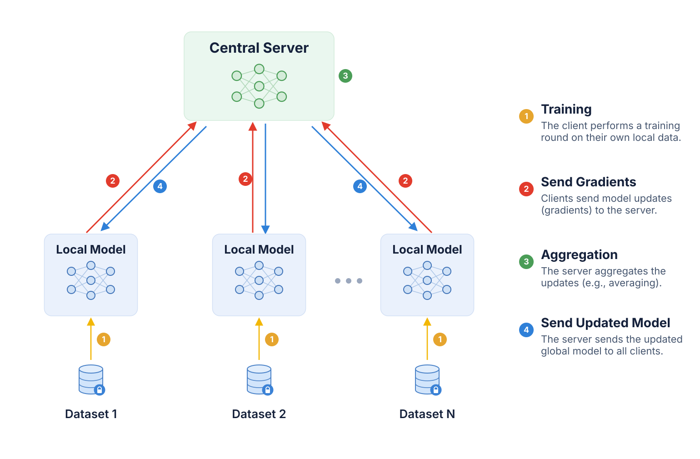

Biography
Research Engineer at the Max Planck Institute for Intelligent Systems in Tübingen, working on 3D digital humans in the team of Michael J. Black. My research centers on parametric body models (SMPL-X, MANO, and FLAME) and their use in human-object interaction, video diffusion models, and face reconstruction. Day-to-day, I work with PyTorch, building data and rendering pipelines, then fine-tuning and evaluating models. At Max Planck I first-authored InterDyn (CVPR 2025), on video diffusion models for interactive object dynamics, and co-authored a second CVPR 2025 paper on face reconstruction from heavily occluded images.
Before joining Max Planck, I completed my MSc in Artificial Intelligence at the University of Amsterdam and a BSc in Technology, Liberal Arts & Sciences at the University of Twente. Along the way, I worked on legal tech at Loyens & Loeff, interned at Perron038, where I built a thermal-imaging system to detect leaks inside sealed detergent-pod boxes, and at Tembo Group, where I mapped the quality trade-offs of federated learning.

Publications
Projects

Building a dataset for detecting leaking detergent pods with thermal imaging A non-destructive inspection method using active thermography, from my internship at Perron038.
Mapping the quality trade-offs of federated learning A systematic review and decision framework for businesses weighing privacy, efficiency, and security, from my Honours thesis at Tembo.